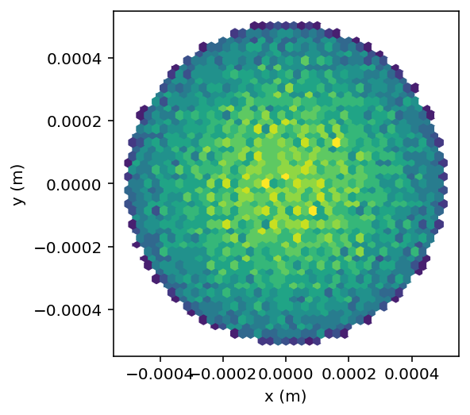

# Useful for debugging
%load_ext autoreload
%autoreload 2
openPMD beamphysics examples
from pmd_beamphysics import ParticleGroup
from pmd_beamphysics.particles import particle_paths, all_components, component_str
from h5py import File
import os
# Open a file, fine the particle paths from the root attributes
# Pick one:
#H5FILE = 'data/bmad_particles.h5'
H5FILE = '../examples/data/distgen_particles.h5'
#H5FILE = 'data/astra_particles.h5'
h5 = File(H5FILE)
ppaths = particle_paths(h5)
ppaths
['/data/0/particles/']
# Point to particles
ph5 = h5[ppaths[0]]
list(ph5)
['momentum', 'position', 'time', 'weight']
# Search for all valid components
all_components(ph5)
['momentum/x',
'momentum/y',
'momentum/z',
'position/x',
'position/y',
'position/z',
'time',
'weight']
# Get some info
for component in all_components(ph5):
info = component_str(ph5, component)
print(info)
momentum/x [10000 items] is a momentum with units: kg*m/s
momentum/y [10000 items] is a momentum with units: kg*m/s
momentum/z [10000 items] is a momentum with units: kg*m/s
position/x [10000 items] is a length with units: m
position/y [10000 items] is a length with units: m
position/z [10000 items] is a length with units: m
time [10000 items] is a time with units: s
weight [10000 items] is a charge with units: C, but expected units: C
ParticleGroup class
# Parse all these into a class
P = ParticleGroup(ph5)
?P
[0;31mType:[0m ParticleGroup
[0;31mString form:[0m ParticleGroup with 10000 particles with total charge 2.3e-09 C
[0;31mFile:[0m ~/Code/GitHub/openPMD-beamphysics/pmd_beamphysics/particles.py
[0;31mDocstring:[0m
Particle Group class
Initialized on on openPMD beamphysics particle group.
The fundamental bunch data is stored in __dict__ with keys
str: species
int: n_particle
np.array: x, px, y, py, z, pz, t, status, weight
where:
x, y, z are positions in units of [m]
px, py, pz are momenta in units of [eV/c]
t is time in [s]
weight is the macro-charge weight in [C], used for all statistical calulations.
Derived data can be computed as attributes:
.gamma, .beta, .beta_x, .beta_y, .beta_z: relativistic factors [1].
.energy, .kinetic_energy: energy, energy - mc2 in [eV].
.p: total momentum in [eV/c]
.mass: rest mass in [eV]
Statistics of any of these are calculated with:
.min(X)
.max(X)
.ptp(X)
.avg(X)
.std(X)
.cov(X, Y, ...)
with a string X as the name any of the properties above.
Useful beam physics quantities are given as attributes:
.norm_emit_x
.norm_emit_y
.higher_order_energy_spread
.average_current
All attributes can be accessed with brackets:
[key]
Additional keys are allowed for convenience:
['min_prop'] will return .min('prop')
['max_prop'] will return .max('prop')
['ptp_prop'] will return .ptp('prop')
['mean_prop'] will return .avg('prop')
['sigma_prop'] will return .std('prop')
Units for all attributes can be accessed by:
.units(key)
Particles are often stored at the same time (i.e. from a t-based code),
or with the same z position (i.e. from an s-based code.)
Routines:
drift_to_z(z0)
drift_to_t(t0)
help to convert these. If no argument is given, particles will be drifted to the mean.
# x positions, in meters
P.x
array([0.00010713, 0.00034532, 0.00024771, ..., 0.00038017, 0.00028772,
0.00046803])
# relativistic gamma, calculated on the fly
P.gamma
array([1.00000219, 1.00000203, 1.00000202, ..., 1.00000221, 1.00000192,
1.00000205])
# Statistics on any of these. Note that these properly use the .weight array.
P.avg('gamma'), P.std('p')
(1.0000004403138203, 186.2248378137966)
# Covariance matrix of any list of keys
P.cov('x', 'px', 'y', 'px')
array([[ 5.53424144e-08, -2.83169902e-05, -8.85128475e-14,
-2.83169902e-05],
[-2.83169902e-05, 7.66575022e+04, -2.98184924e-05,
7.66575022e+04],
[-8.85128475e-14, -2.98184924e-05, 5.53424144e-08,
-2.98184924e-05],
[-2.83169902e-05, 7.66575022e+04, -2.98184924e-05,
7.66575022e+04]])
# These can all be accessed with brackets. sigma_ and mean_ are also allowed
P['sigma_x'], P['sigma_energy'], P['min_y'], P['norm_emit_x']
(0.00023523792234909837,
0.18297475640831348,
-0.0004981677461026075,
1.2746364511228228e-07)
# Units
P.units('x'), P.units('energy'), P.units('norm_emit_x')
('m', 'eV', 'm*rad')
# These particles are from Bmad, at the same z and different times
P.std('z'), P.std('t')
(0.0, 8.499999999999998e-12)
# Get the central time
t0 = P.avg('t')
t0
1.8846240950683415e-29
# Drift all particles to this time
P.drift_to_t(t0)
# Now these are at different z, and the same t
P.std('z'), P.avg('t'), set(P.t)
(1.3782686402625986e-06, 1.8846240950683418e-29, {1.8846240950683415e-29})
# Write Astra-style particles
P.write_astra('astra.dat')
!head astra.dat
1.535211903978e-09 1.856269541216e-09 1.070586479124e-09 6.271287796258e-15 -4.158380796802e-15 2.209872489179e+02 1.884624095068e-20 0.000000000000e+00 1 -1
1.176211316871e-04 0.000000000000e+00 -1.070586479124e-09 0.000000000000e+00 0.000000000000e+00 0.000000000000e+00 1.401298464325e-45 0.000000000000e+00 1 -3
0.000000000000e+00 1.176210509770e-04 -1.070586479124e-09 0.000000000000e+00 0.000000000000e+00 0.000000000000e+00 -1.401298464325e-45 0.000000000000e+00 1 -3
2.352422633743e-04 0.000000000000e+00 -1.070586479124e-09 0.000000000000e+00 0.000000000000e+00 0.000000000000e+00 2.802596928650e-45 0.000000000000e+00 1 -3
0.000000000000e+00 2.352421019540e-04 -1.070586479124e-09 0.000000000000e+00 0.000000000000e+00 0.000000000000e+00 -2.802596928650e-45 0.000000000000e+00 1 -3
3.528633950614e-04 0.000000000000e+00 -1.070586479124e-09 0.000000000000e+00 0.000000000000e+00 0.000000000000e+00 4.203895392974e-45 0.000000000000e+00 1 -3
0.000000000000e+00 3.528631529310e-04 -1.070586479124e-09 0.000000000000e+00 0.000000000000e+00 0.000000000000e+00 -4.203895392974e-45 0.000000000000e+00 1 -3
1.065193280141e-04 1.735346925002e-06 -6.283040584423e-06 9.952455831699e+01 -2.713248083494e+02 8.094963387695e+02 -3.009265538105e-36 2.300000000000e-04 1 -1
3.477771387837e-04 -7.989879742208e-07 8.735794043941e-06 2.756521901170e+02 -1.399710606513e+02 7.599174294062e+02 -3.009265538105e-36 2.300000000000e-04 1 -1
2.470697624842e-04 4.228791604532e-07 1.563537452633e-06 -3.888510222210e+02 -3.510180008930e+01 7.298625966483e+02 -3.009265538105e-36 2.300000000000e-04 1 -1
Plot
import matplotlib.pyplot as plt
import matplotlib
cmap = plt.get_cmap('viridis')
cmap.set_under('white')
matplotlib.rcParams['figure.figsize'] = (13,8)
%config InlineBackend.figure_format = 'retina'
%matplotlib inline
fig, ax = plt.subplots()
ax.set_aspect('equal')
xkey = 'x'
ykey = 'y'
datx = P[xkey]
daty = P[ykey]
ax.set_xlabel(f'{xkey} ({P.units(xkey)})')
ax.set_ylabel(f'{ykey} ({P.units(ykey)})')
ax.hexbin(datx, daty, gridsize=40, cmap=cmap, vmin=1e-15)
<matplotlib.collections.PolyCollection at 0x11a788890>

# Cleanup
os.remove('astra.dat')